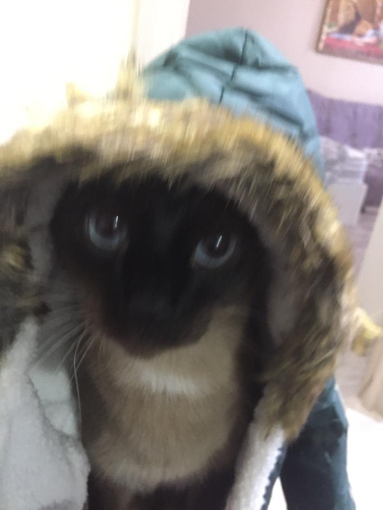

Его подбросили в подъезд какие-то нехорошие люди. Это был месяц ноябрь. Представляете как ему было холодно.
Он был такой маленький, беззащитный. Мы решили оставить его себе. Тем более, у нас с женой не было детей.
Теперь он жил у нас, с 2019-го года.
Это очень любопытнй кот. Он везде может залесть, везде присутствует. Даже ведёт себя нагло, но как-то по доброму. Он ласковый и умный. Очень любит гулять
Вот он, этот коварный тип.Так он выглядит

Но это ведь не он, а вот он.
Любимые блюда Моисея:
Совершенно отвратительные кушания для Моисея: